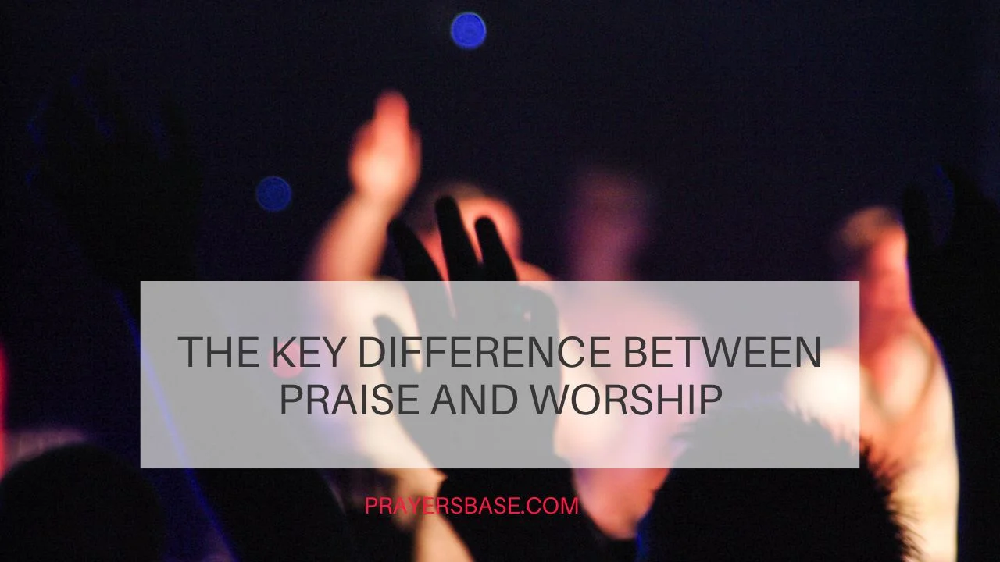

Worship vs Praise: "What do you prefer?"
Worship or Praise?
by Eva Ortiz - June 19, 2025
The book of Psalm 100:4 says that we should approach God and enter into His presence through Praise and gratitude. Praise might be considered an automatic reaction that gets our hearts ready for Worship. Praise can bring us to a position of humility and preparation for Worship because of its joyous and festive nature. Praise creates a foundation for more in-depth Worship by preparing our hearts and enabling us to express gratitude to God.
The book of Matthew 21:9 depicts Jesus entering Jerusalem and receiving Praise from the people. Ephesians 5:19-20 features the apostle Paul urging followers to sing praises to God. These books suggest that the purpose of Praise is to acknowledge the goodness of God and to prepare the way for more intense Worship. Praise frequently opens the door to worship.
Most Christians...
Most Christians believe it is a meaningful way to request God’s presence. They believe that it’s crucial to engage in both public and private Worship. God desires for you to come into His presence. According to Psalm 22:3, God resides or is enthroned in the praises of His followers. Biblical scholars believe that they develop our faith, strengthen our relationship with God, and conform us to His image. They contribute to developing a profound relationship between us and the Almighty. Praise enables us to demonstrate our appreciation and acknowledge God’s qualities, whereas Worship encourages us to give our hearts and live by His will.
The difference between worship and praise can be summarized as follows:
Focus:
Praise emphasizes what God has done, while worship
emphasizes who God is.
Expression:
Praise is often a physical act of adoration, whereas worship
occurs in the innermost being and involves a deeper
connection.
Intent:
Praise is about God, while worship is directed to God,
involving submission to His will and recognizing His
sovereignty.
Depth:
Worship is considered a more intimate and profound
expression of faith compared to praise, which can be more
outwardly expressed.